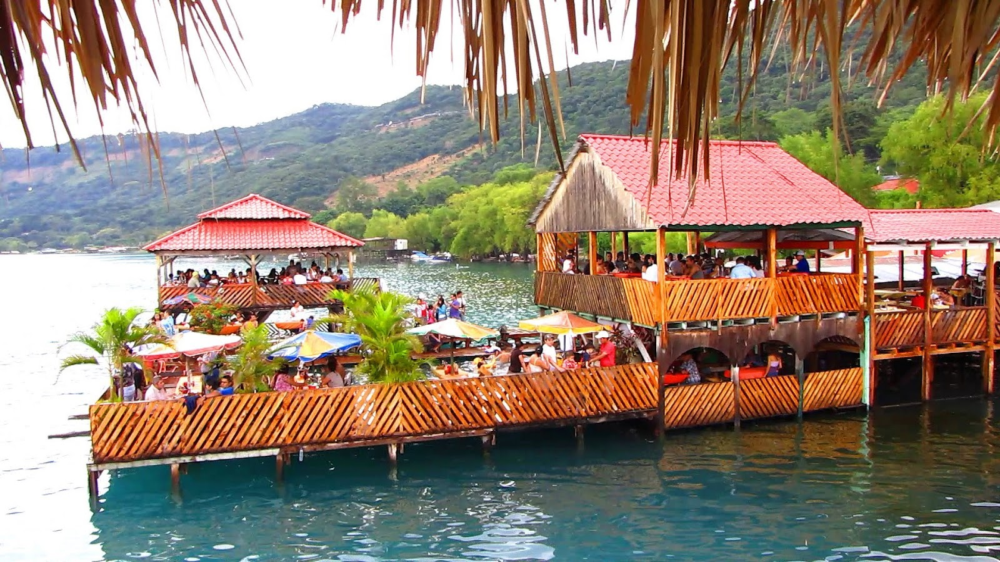

VISIÓN
Ser la empresa líder a nivel nacional y regional en el negocio de restaurantes dado a conocer nuestra gastronomia.
MISIÓN
Ser la empresa líder a nivel nacional y regional en el negocio de restaurantes dado a conocer nuestra gastronomia.